The .gitignore
Module Learning Objectives
By the end of this module, you will be able to:
- Create a “.gitignore” in a repository using a GitHub template
- Explain the purpose of a “.gitignore” in collaborative projects
- Evaluate the content you think might warrant adding to the “.gitignore”
Overview
A “.gitignore” is a file you can use to tell Git what not to track. Any file/folder whose name is in the “.gitignore” will not be tracked by Git. This is useful if you want to include data in your local version of your repository but don’t want to risk sharing that data by committing it to a public GitHub repository. This file exists at the top level of every repository and can be customized however is most useful to you and your collaborators.
Creating a “.gitignore”
When you first create a repository you will have the opportunity to select a template “.gitignore” based on the coding language you plan on using. During the process of creating a repository, you can choose one of the templates curated by GitHub for a variety of coding languages. These templates exclude some typical machine-readable files that–while necessary for standard IDEs/background tasks–are not meaningful to track with version control.
To add a “.gitignore” during the repository creation phase, simply click the dropdown menu and start typing the name of your coding language. Unfortunately for R users, typing just “R” returns all templates that contain the letter ‘r’ so you will need to scroll a bit to find the option that is actually for the R language. Once you find the template you want, click it and the template dropdown should change from “.gitignore template: None” to “.gitignore template: <your pick>”.
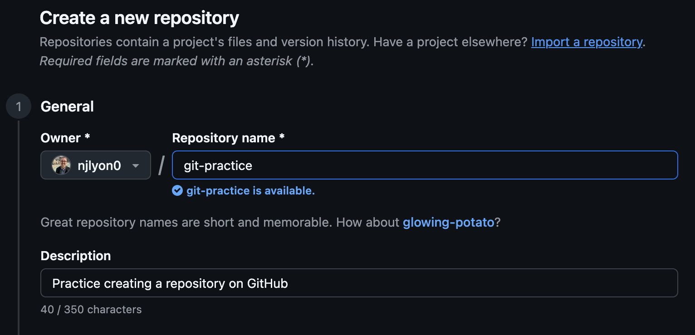 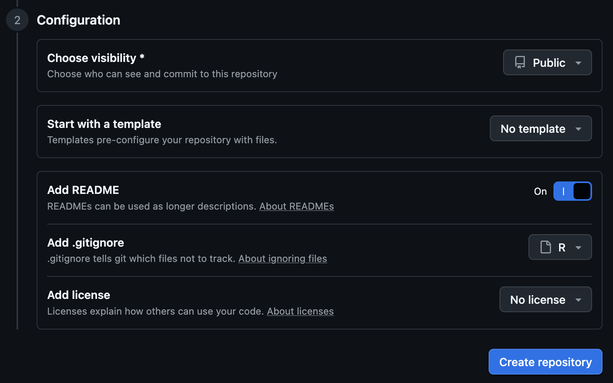
If you create a repository without choosing a “.gitignore” template, don’t worry: you can always create one later! If you want to create a “.gitignore” in an extant repository that lacks one, run the relevant command line code for your computer’s operating system in your IDE’s “Terminal” pane.
touch .gitignorecopy NUL .gitignoreIf copy NUL does not work, try touch instead.
Using a “.gitignore”
A classic use-case for a “.gitignore”–as previously mentioned–is to ignore any data files that you have in your working directory but that you don’t want Git to track of GitHub to store. In general, script inputs and outputs should not be tracked by Git or put in GitHub. Versioning of tabular data doesn’t really work very well and it’ll clutter your GitHub repository with data files that you already have access to elsewhere.
Additionally, storing script inputs/outputs both on GitHub and elsewhere (e.g., Google Drive, Dropbox) undermines the “single source of truth” and dramatically increases the risk that you accidentally work with a superseded input file and get incorrect results.
Taken together, the following demonstration of how to use a “.gitignore” will focus on ignoring a new data file in the working directory. This file is informatively named “data.csv”.
To begin, we can check the Git pane of RStudio to confirm that Git does see “data.csv” even though Git is not tracking it currently.
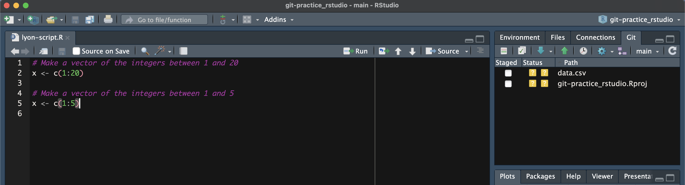
With that confirmed, click over to the “Files” pane. Because the “.gitignore” file starts with a period, it is likely invisible to your standard file explorer program but RStudio’s “Files” pane does see it and easily lets you interact with it.
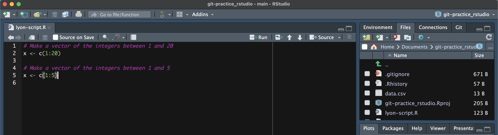
In the “Files” pane, click the “.gitignore” to open it. If you scroll through you can see that the template from GitHub includes a number of files, many of which you may never have seen (again, often because they start with a period and are thus not easily visible).
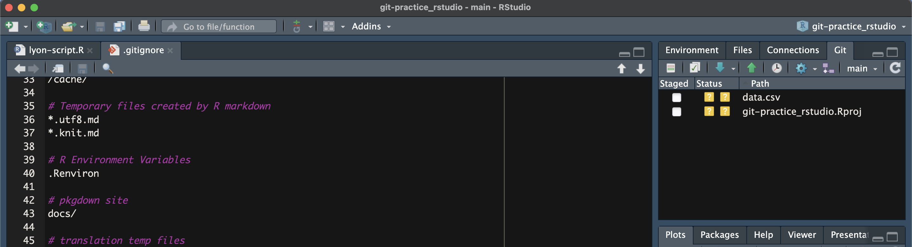
While currently we only have “data.csv” in our working directory, we can safely assume that we don’t want any CSVs to be tracked by Git. So, rather than entering “data.csv” into the “.gitignore”, let’s add a wildcard for all CSVs by entering “*.csv” at the bottom of the “.gitignore”. Note that in the below screen shot, we haven’t saved our edits to the “.gitignore” so the “Git” pane still (1) shows “data.csv” and (2) does not show any modifications to the “.gitignore”.
You can enter comments in the “.gitignore” in the same way you would in R/Python code: by adding a # to the start of the line. This can be helpful if you want to add small documentation of what is being ignored or why it is being ignored.
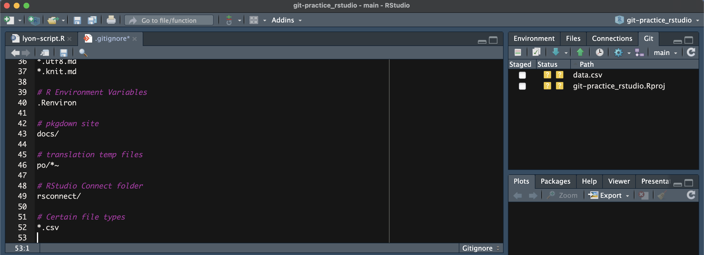
Once you save the edits to the “.gitignore”, you’ll notice that the Git pane automatically updates to (1) no longer show “data.csv” and (2) show that the “.gitignore” has been modified since the last commit. You can then commit and push your edits to the “.gitignore” in the same way you would edits to any other file.
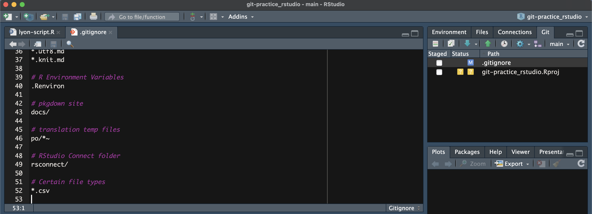
To begin, we can check the “source control” pane of Positron to confirm that Git does see “data.csv” even though Git is not tracking it currently.
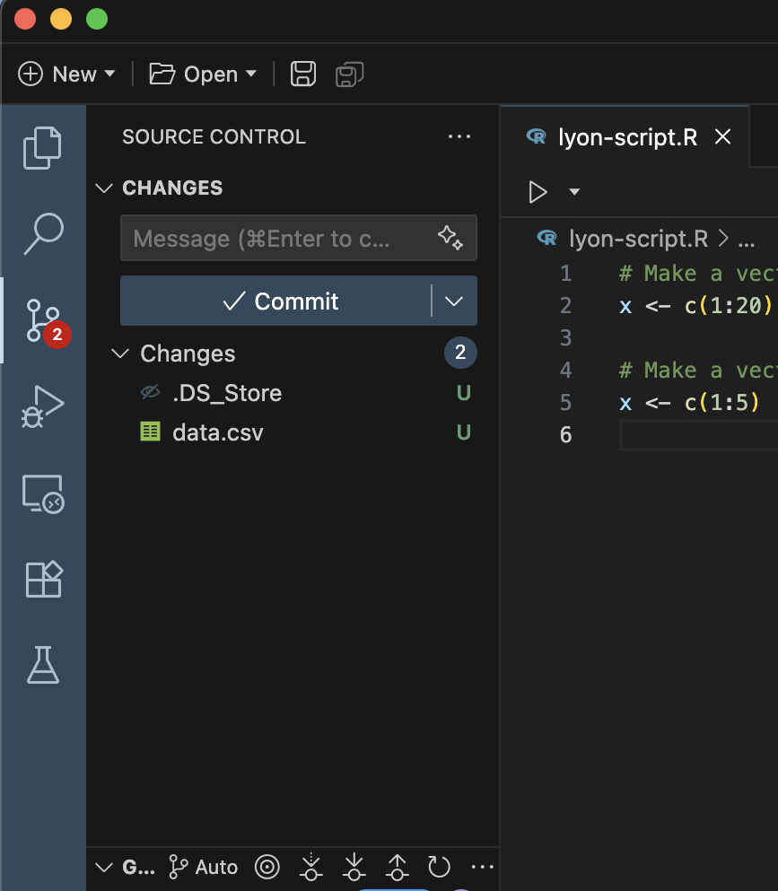
With that confirmed, click over to the “Explorer” pane. Because the “.gitignore” file starts with a period, it is likely invisible to your standard file explorer program but Positron’s “Explorer” pane does see it and easily lets you interact with it.
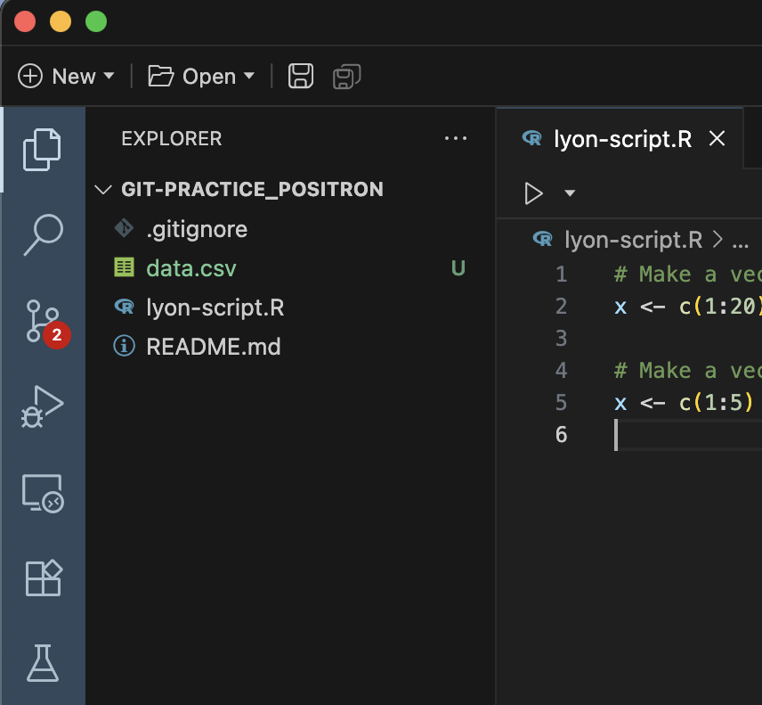
In the “Explorer” pane, click the “.gitignore” to open it. If you scroll through you can see that the template from GitHub includes a number of files, many of which you may never have seen (again, often because they start with a period and are thus not easily visible).
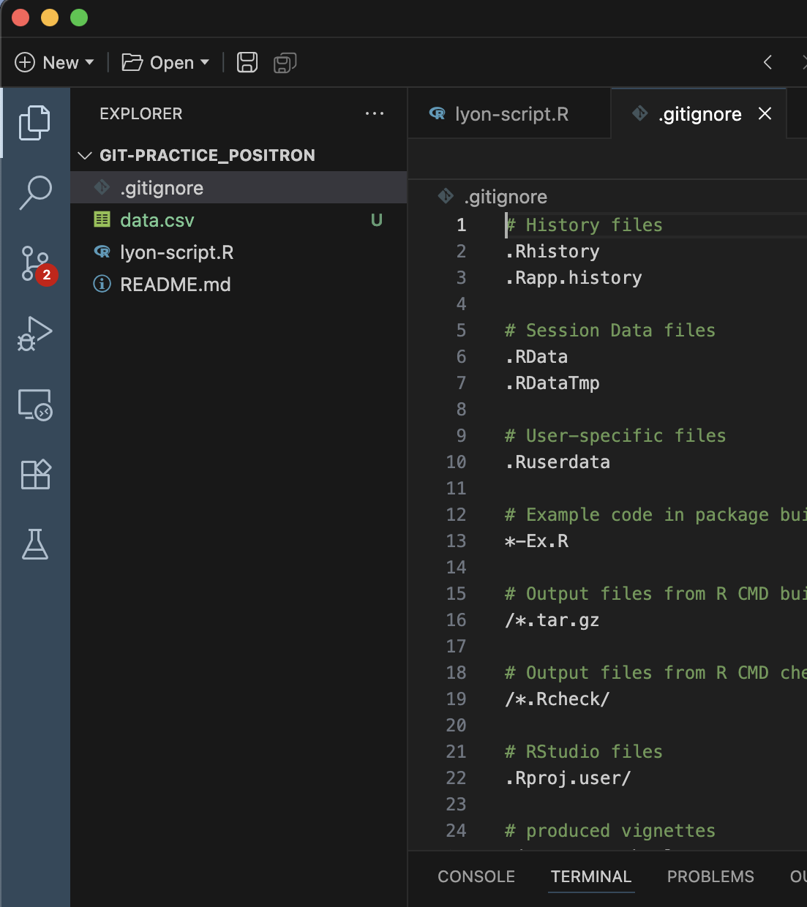
While currently we only have “data.csv” in our working directory, we can safely assume that we don’t want any CSVs to be tracked by Git. So, rather than entering “data.csv” into the “.gitignore”, let’s add a wildcard for all CSVs by entering “*.csv” at the bottom of the “.gitignore”. Note that in the below screen shot, we haven’t saved our edits to the “.gitignore” so the “source control” pane still (1) shows “data.csv” and (2) does not show any modifications to the “.gitignore”.
You can enter comments in the “.gitignore” in the same way you would in R/Python code: by adding a # to the start of the line. This can be helpful if you want to add small documentation of what is being ignored or why it is being ignored.
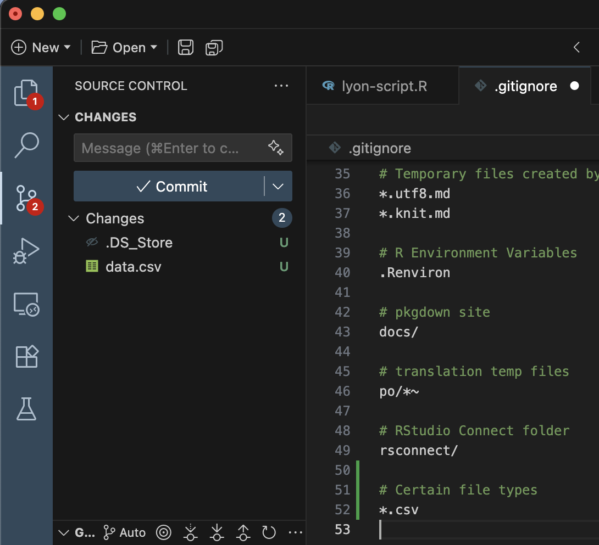
Once you save the edits to the “.gitignore”, you’ll notice that the source control pane automatically updates to (1) no longer show “data.csv” and (2) show that the “.gitignore” has been modified since the last commit. You can then commit and push your edits to the “.gitignore” in the same way you would edits to any other file.
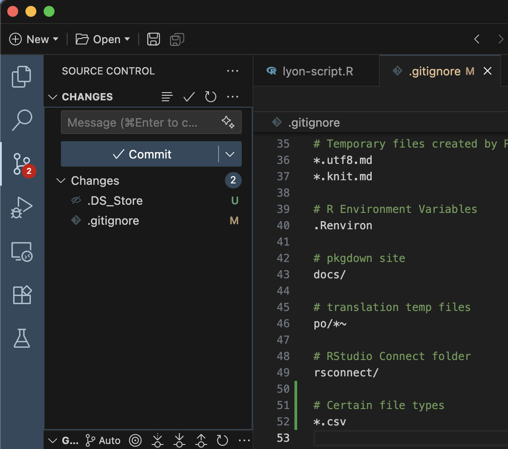
Ignoring Previously Tracked Content
Imagine a situation where you commit a file that you don’t want Git to track and push that commit before realizing your mistake. Now that file is tracked by Git and every time you alter that file, it will show up in your IDE’s version control pane. If you add the file to your “.gitignore” now, you won’t be able to delete it because Git will stop tracking new changes (even deletions).
To resolve this, do the following:
- Delete the offending file(s)
- If you don’t want to actually delete them, just move the file(s) out of the folder tracked by Git and move them back after step 3
- Commit the deletion
- Add the file(s) to the “.gitignore”
- Commit the change to the “.gitignore”
- push/sync your changes with GitHub
LTER SciComp Recommendations
There are many different opinions on what should go into a “.gitignore” but see below for some recommendations of things to ignore from the makers of this workshop. Feel free to disregard any that you don’t feel apply to your needs.
Start with the GitHub Template
When you create a repository, use GitHub to add the template “.gitignore” for your chosen programming language. There are a lot of small files that typical users don’t care about that your project will accumulate over its lifecycle. If you don’t flag these in the “.gitignore” it can become difficult to sort through your repository.
Ignore Script Inputs and Outputs
Version control is only meant to track code files so everything else should be ignored. You should store your inputs somewhere that your collaborators can access them and–at the end of your project–archive them in a FAIR (Findable, Accessible, Interoperable, and Reusable) repository. Anyone wanting access to script outputs should be able to use those inputs to run the code themselves and generate them. Alternately, you may also want to upload script outputs to some static platform (e.g., Google Drive, Dropbox) so non-coders can easily access them there. In either case, Git should not be used to track/store anything other than code files.
One way of doing this fairly efficiently is to create dedicated folders for storing inputs or outputs (e.g., “data/”, “graphs/”, “results/”) and then add those folder names to the “.gitignore”. You could also ignore certain file types–as demonstrated above–if your inputs/outputs belong to a relatively small set of file types.
Ignore the “.DS_Store” File
If you are a Mac user, you should ignore the “.DS_Store” file. Macs create a “Desktop Services Store” file (or “.DS_Store” for short) every time you open a folder. This file is invisible in your file manager but can be committed. This file has no practical value in your project and a separate one exists in every subfolder so tracking them can quickly clutter a repository if you use subfolders.
Ignore the R Project File
If you are an RStudio user, you should ignore the “.Rproj” file. This opinion is a relatively contentious one as RStudio users are deeply divided on whether to ignore this file or commit it. We recommend ignoring it for two reasons:
- If you commit your .Rproj file and someone later deletes it, the next time you pull, Git will delete your .Rproj file and cause RStudio to unexpectedly quit–costing you all of your uncommitted edits. You will then need to create a new .Rproj in the desired folder and re-connect it to Git/GitHub.
- All group members may have different names for their .Rproj files which means you could have as many of these files in your GitHub repository as there are collaborators. This is cumbersome to sort through and attempts to fix this post hoc run the risk outlined in the first point.
If these risks are not sufficient to sway you, consider that the .Rproj file serves almost no purpose in the first place. In theory, the .Rproj file can be used to define some RStudio settings for anyone who uses that .Rproj but few R users actually use it for this purpose and instead mostly use it as a shortcut to open the relevant project in RStudio.
Ultimately, this is up to you and your team to decide! Hopefully the rationale we provided above helps inform this decision and we are happy to discuss this more if you have follow up questions.